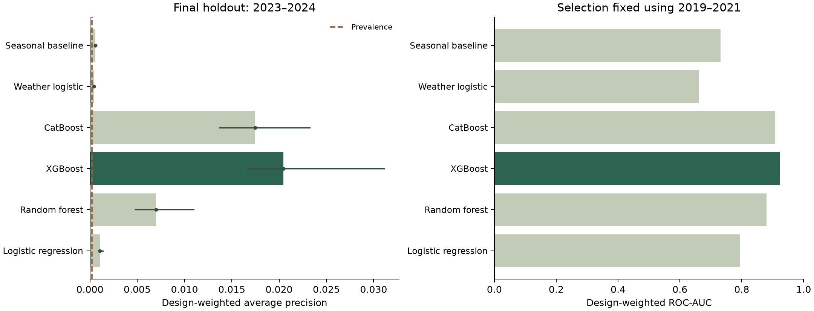
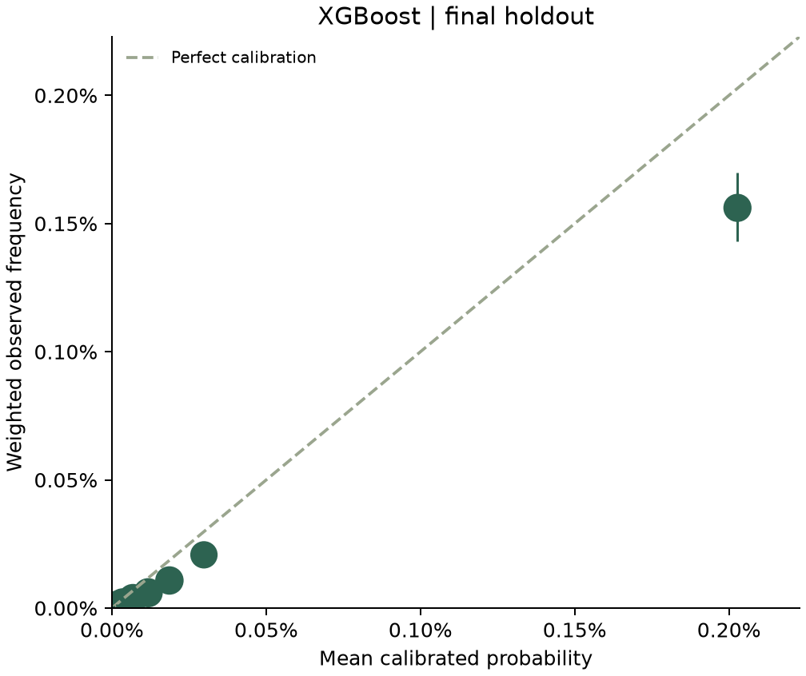
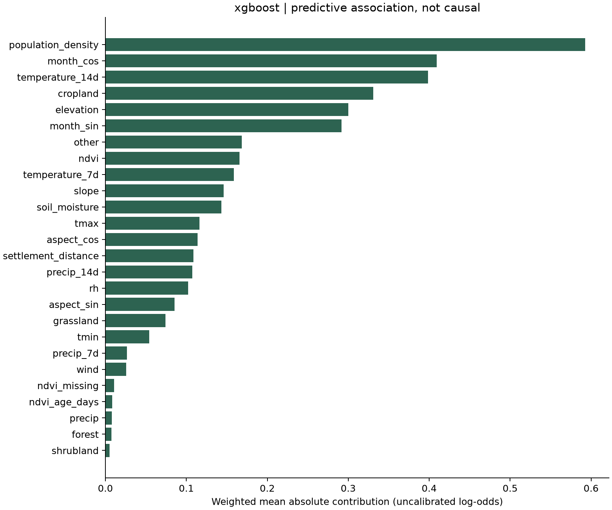

STEPPE OBSERVATORY · REAL PUBLIC DATA
Реальная модель.
Финальная проверка.
Для карты выбрана XGBoost по средней взвешенной AP временной валидации 2019–2021. Калибровка выполнена на 2022 году. Контрольные данные 2023–2024 открыты после фиксации моделей и порогов.
AP · тест 2023–20240.02045
ROC-AUC0.9237
Brier score0.000196
Фактически выполненное обучение
1,250,660 обучающих строк; 113,134 положительных. Прошедшее время запуска, включая приостановки компьютера: 3.18 ч. Пик резидентной памяти процесса: 2.03 ГиБ. Аппаратная и программная среда зафиксированы в реестре.
| model |
attempts |
completed |
pruned |
failed |
| Random forest |
23 |
14 |
8 |
1 |
| XGBoost |
5 |
5 |
0 |
0 |
| CatBoost |
5 |
5 |
0 |
0 |
Попытки с ранней остановкой Optuna показаны отдельно. Победитель выбран до доступа к контрольным годам.
Восстановление отсутствующих файлов поставщика
Четыре отсутствующих S3-файла почвенной влажности за 14 сентября — 6 декабря 2023 получены через официальный API того же поставщика ERA5. Запрошены реальные почасовые наблюдения в исходных узлах сетки. На 200 узлах в каждый из двух обучающих дней максимальное расхождение суточного признака составило 0 м³/м³.
Модель, калибровка, пороги и правила признаков не менялись. Все ответы и контрольные суммы сохранены; загрузка соблюдала бесплатные лимиты. Результаты проверки · Полный аудит источников.
До финальной оценки пользователь сократил бюджет поиска с 50 до 5 попыток на ансамбль. Уже рассчитанные варианты Random Forest сохранены; поиску моделей выделено разное число попыток. Результат относится к проверенным кандидатам. Запись изменения протокола.
Процессорное время процесса, суммарно по всем его потокам: 3.97 CPU·ч. Это отдельное измерение Windows GetProcessTimes за весь срок жизни процесса; оно не равно календарному времени запуска. Исходная запись времени.
На питании от сети для процесса сравнения использовался HighQoS Windows; исходный режим восстанавливался при работе от батареи. Журнал параметров выполнения.
Состав данных и пропуски
Реальные подготовленные выборки 2015–2022, до финального удаления промышленных ячеек. Доли пропусков здесь невзвешенные и относятся к строкам выборки. Обучающие и проверочные строки могут пересекаться между годами обучения и валидации; их нельзя суммировать как независимые наблюдения.
| Выборка |
Строк |
Положительных |
NDVI: пропуски, % |
Население: пропуски, % |
| 2015_train.parquet |
169046 |
15326 |
44.15 |
0.98 |
| 2016_train.parquet |
143990 |
13050 |
44.68 |
0.95 |
| 2017_train.parquet |
240479 |
21819 |
38.02 |
0.71 |
| 2018_train.parquet |
163744 |
14844 |
43.39 |
0.83 |
| 2019_train.parquet |
206923 |
18773 |
36.36 |
0.78 |
| 2020_train.parquet |
183919 |
16679 |
38.28 |
0.89 |
| 2021_train.parquet |
142891 |
12951 |
32.11 |
0.98 |
| 2019_evaluation.parquet |
287423 |
18773 |
38.97 |
1.67 |
| 2020_evaluation.parquet |
262799 |
16679 |
38.32 |
1.70 |
| 2021_evaluation.parquet |
223871 |
12951 |
35.95 |
1.93 |
| 2022_evaluation.parquet |
197124 |
10134 |
49.01 |
1.95 |
Обязательные метеоданные, покров и рельеф проверены до включения строки. Пропуски NDVI и населения заполняет медиана, рассчитанная только на обучающих данных каждого разбиения. Исходные доли и численность CSV.
Сравнение замороженных моделей
Полосы на AP: 95% интервалы, 1000 одинаковых блочных повторов 100 км × 30 дней. Зелёным отмечена модель, выбранная до доступа к тесту.

|
average_precision |
roc_auc |
brier |
bss |
precision |
recall |
f1 |
prevalence |
| model |
|
|
|
|
|
|
|
|
| Logistic regression |
0.001041 |
0.792877 |
0.000196 |
0.000114 |
0.001841 |
0.048395 |
0.003547 |
0.000196 |
| Random forest |
0.006972 |
0.879401 |
0.000195 |
0.003150 |
0.024272 |
0.051516 |
0.032997 |
0.000196 |
| XGBoost |
0.020446 |
0.923685 |
0.000196 |
0.000199 |
0.097609 |
0.051643 |
0.067548 |
0.000196 |
| CatBoost |
0.017483 |
0.908022 |
0.000194 |
0.008464 |
0.045497 |
0.072084 |
0.055784 |
0.000196 |
| Weather logistic |
0.000425 |
0.661597 |
0.000196 |
0.000175 |
0.000434 |
0.055082 |
0.000861 |
0.000196 |
| Seasonal baseline |
0.000575 |
0.731036 |
0.000196 |
0.000000 |
0.001680 |
0.055336 |
0.003261 |
0.000196 |
Калибровка вероятностей
Границы интервалов зафиксированы на 2022 году. Размер точки отражает вес наблюдений.

Объяснение предиктивных связей
TreeSHAP; единицы вклада: uncalibrated log-odds. Калибровка находится вне объяснения; аддитивное восстановление исходного выхода модели проверено численно.
Глобальная оценка использует 400 случайно выбранных строк финальной вероятностной выборки с исходными весами. Дополнительные примеры с высоким прогнозом и ошибками не меняют глобальную важность. Эти связи не являются причинными объяснениями.

Важность CSV · Группы признаков по покрову и областям · Локальные примеры Parquet
Что измерено
Цель — первое спутниковое обнаружение связанного события, а не подтверждённое время возгорания. Отсутствие детекций не доказывает отсутствие огня. Метрики имеют веса отбора отрицательных примеров и относятся к допустимым ячейкам с обязательными признаками.
Всего в финальной выборке: 345,954 строк, 15,704 положительных. Оценка взвешенного числа допустимых ячейко-дней: 80,081,865.
Архивы переобработаны после дат наблюдений. ERA5, NOAA NDVI, SRTM 90 м и исторические антропогенные данные — документированные открытые аналоги. Результат представляет ретроспективный эксперимент; оперативная пригодность не подтверждена.